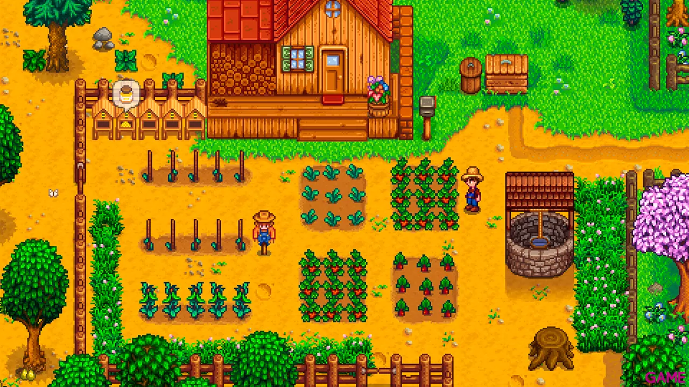
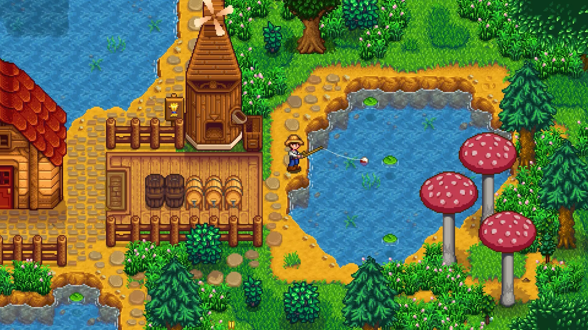
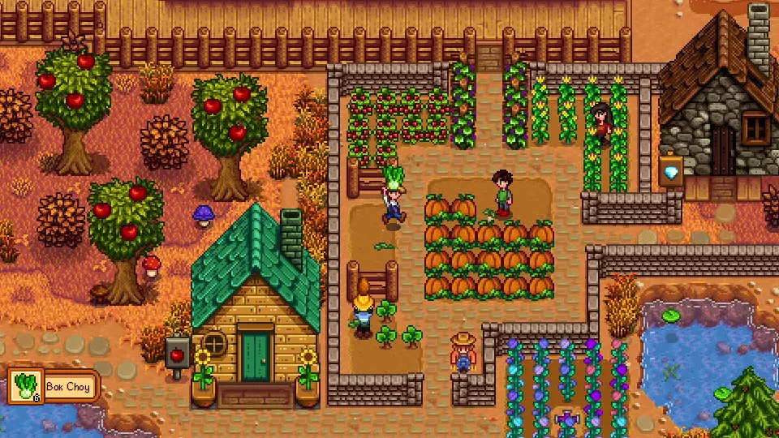

Sinopsis: Heredaste la vieja granja de tu abuelo en Stardew Valley. Armado con herramientas de mano y unas monedas, te diriges al principio de tu nueva vida. Podrás aprender a vivir de la tierra y convertir esas tierras salvajes en tu hogar? No será fácil. Desde que la Corporación Joja llegó al pueblo, las viejas costumbres de vida empezaron a desaparecer. El centro comunal, uno de los lugares con más actividad del pueblo, está abandonado. Pero el valle está lleno de oportunidades. Con un poco de dedicación, tú podrías ser quien recupere la grandeza de Stardew Valley.
Stardew Valley
Desarrollador: Concerned Ape (Eric Barone).
Fecha de lanzamiento: 26 de Febrero de 2016.
Género: Simulación, RPG.
Plataformas: PC, Play Station 4, Nintendo Switch y Xbox One.
Titulo
Imagenes In-Game


